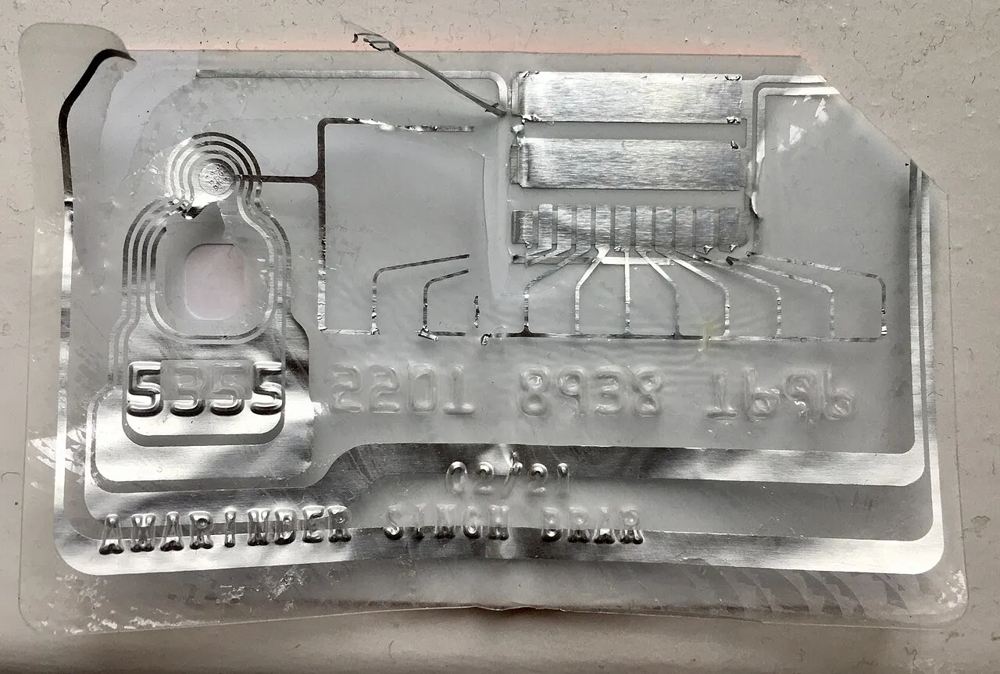

결제는 가격보다 습관입니다

스테이블코인은 가격 변동이 작은 디지털 토큰이라는 설명만으로는 결제 시장을 뚫기 어렵습니다. 소비자와 가맹점이 실제로 쓰려면 기존 카드, 계좌이체, 간편결제보다 분명한 이유가 있어야 합니다. 해외 송금 수수료가 낮거나 정산 시간이 빠르거나 플랫폼 안에서 바로 쓸 수 있어야 습관이 생깁니다.
문제는 스테이블코인이 현금처럼 보이면서도 예금과 같지는 않다는 점입니다. 발행사가 어떤 자산을 들고 있는지, 환매 요청을 얼마나 빨리 처리하는지, 준비자산이 누구의 계좌에 있는지에 따라 신뢰가 달라집니다. 결제 수단은 한 번 흔들리면 회복이 어렵기 때문에 규제는 속도보다 안전장치를 먼저 요구합니다.
가맹점 입장에서는 가격 안정성보다 정산 확실성이 중요합니다. 받은 토큰을 언제 현금화할 수 있는지, 수수료가 얼마인지, 세금과 회계 처리가 쉬운지 확인해야 합니다. 이 조건이 복잡하면 스테이블코인은 투자자 지갑 안에서만 돌고 실제 상점으로 내려오지 못합니다.
이자는 가장 민감한 선입니다
스테이블코인 발행사는 준비자산에서 이자를 얻을 수 있습니다. 그러나 그 이자를 사용자에게 직접 나눠 주기 시작하면 은행 예금과 비슷한 경쟁이 됩니다. 규제 당국이 민감하게 보는 지점이 바로 여기입니다. 결제 토큰이 예금처럼 행동하면 예금자 보호, 은행 규제, 금융 안정성 논쟁이 따라옵니다.
직접 이자 지급이 제한되면 플랫폼은 다른 보상을 찾습니다. 거래 수수료 할인, 포인트, 카드 캐시백, 멤버십 혜택처럼 우회적인 보상 설계가 등장할 수 있습니다. 이 보상이 사실상 이자에 가까운지, 소비자에게 얼마나 투명하게 설명되는지가 다음 규제 쟁점이 됩니다.
투자자는 스테이블코인 발행사의 수익성을 볼 때 준비자산 이자만 보면 안 됩니다. 보상 비용, 환매 유동성, 규제 준수 비용, 파트너 결제망 비용이 함께 늘어날 수 있습니다. 금리가 내려가면 준비자산 수익도 줄기 때문에 현재의 높은 이자 환경을 영구적인 수익 모델로 보면 위험합니다.
준비자산은 말보다 보고서입니다
스테이블코인의 신뢰는 백서가 아니라 준비자산 보고서에서 나옵니다. 단기 국채, 현금성 자산, 역환매 조건부 채권이 얼마나 있고, 만기가 얼마나 짧은지, 외부 감사가 얼마나 자주 이뤄지는지 확인해야 합니다. 준비자산이 안전해 보여도 유동성이 부족하면 대량 환매 때 문제가 생길 수 있습니다.
환매 절차도 중요합니다. 사용자가 토큰을 달러나 원화로 바꾸려 할 때 어떤 창구를 거치는지, 최소 금액이 있는지, 주말과 휴일에는 어떻게 처리되는지에 따라 실제 안정성이 달라집니다. 결제 시장에서는 1달러 고정이라는 약속보다 즉시 환매가 더 큰 신뢰 신호입니다.
거래소와 지갑 사업자의 역할도 커집니다. 발행사가 안전해도 유통 플랫폼이 고객 자산을 섞어 관리하면 소비자 보호 문제가 생깁니다. 그래서 스테이블코인 결제 경쟁은 발행사, 거래소, 은행, 카드망, 지갑 앱이 함께 책임을 나누는 구조로 갈 가능성이 큽니다.
승자는 보이지 않는 결제망입니다
대중 결제에서 이기는 스테이블코인은 사용자가 토큰 이름을 외우게 만드는 서비스가 아닐 수 있습니다. 앱 안에서는 원화나 달러처럼 보이고, 뒤에서는 스테이블코인으로 정산되는 구조가 더 자연스럽습니다. 소비자는 복잡한 체인 수수료보다 환율, 환불, 결제 성공률을 봅니다.
국경 간 결제에서는 장점이 더 분명합니다. 은행 영업시간과 중개 수수료를 줄일 수 있고, 프리랜서나 소상공인은 빠른 정산을 원합니다. 다만 자금세탁 방지와 제재 준수 기준을 통과하지 못하면 기관 고객은 들어오지 않습니다. 편의성과 규제 준수는 동시에 맞아야 합니다.
결국 2026년 스테이블코인 시장의 관건은 토큰 발행량보다 결제망 안착입니다. 어떤 보상을 허용받는지, 준비자산을 얼마나 투명하게 보이는지, 기존 금융망과 얼마나 부드럽게 연결되는지가 경쟁력을 가릅니다.
관련 영상
스테이블코인 이자 전면 금지법의 쟁점
스테이블코인은 크립토 시장의 가격 이야기에서 결제 인프라 이야기로 넘어가고 있습니다. 이 전환이 성공하려면 높은 보상보다 낮은 실패율이 중요합니다. 발행량이 아니라 환매, 보고서, 가맹점 정산, 규제 적합성이 다음 승부처입니다.
스테이블코인 결제 경쟁은 이자 금지와 보상 설계가 갈림길을 볼 때는 발표 직후의 반응보다 다음 분기까지 이어지는 숫자를 함께 확인하는 편이 좋습니다. 단기 뉴스는 방향을 빠르게 바꾸지만 실제 변화는 계약, 예산, 생산, 소비 습관처럼 느린 항목에서 굳어집니다. 이 차이를 나누어 보면 과장된 기대와 실제 지속 가능성을 구분할 수 있습니다.
가장 실용적인 점검 방법은 한 가지 지표에 기대지 않는 것입니다. 가격, 수요, 비용, 규제, 실행 시간이 같은 방향으로 움직이는지 확인해야 합니다. 어느 하나만 좋아도 나머지가 따라오지 않으면 결과는 늦어지고, 여러 조건이 동시에 맞으면 변화는 예상보다 빠르게 확산될 수 있습니다.
이 주제는 한 번의 결론보다 관찰 순서가 더 중요합니다. 먼저 현재 병목을 확인하고, 그다음 누가 비용을 부담하는지 보며, 마지막으로 그 부담이 가격이나 행동 변화로 이어지는지 봐야 합니다. 그렇게 읽으면 제목보다 구조가 먼저 보입니다.
스테이블코인 결제 경쟁은 이자 금지와 보상 설계가 갈림길을 볼 때는 발표 직후의 반응보다 다음 분기까지 이어지는 숫자를 함께 확인하는 편이 좋습니다. 단기 뉴스는 방향을 빠르게 바꾸지만 실제 변화는 계약, 예산, 생산, 소비 습관처럼 느린 항목에서 굳어집니다. 이 차이를 나누어 보면 과장된 기대와 실제 지속 가능성을 구분할 수 있습니다.
가장 실용적인 점검 방법은 한 가지 지표에 기대지 않는 것입니다. 가격, 수요, 비용, 규제, 실행 시간이 같은 방향으로 움직이는지 확인해야 합니다. 어느 하나만 좋아도 나머지가 따라오지 않으면 결과는 늦어지고, 여러 조건이 동시에 맞으면 변화는 예상보다 빠르게 확산될 수 있습니다.
이 주제는 한 번의 결론보다 관찰 순서가 더 중요합니다. 먼저 현재 병목을 확인하고, 그다음 누가 비용을 부담하는지 보며, 마지막으로 그 부담이 가격이나 행동 변화로 이어지는지 봐야 합니다. 그렇게 읽으면 제목보다 구조가 먼저 보입니다.
스테이블코인 결제 경쟁은 이자 금지와 보상 설계가 갈림길을 볼 때는 발표 직후의 반응보다 다음 분기까지 이어지는 숫자를 함께 확인하는 편이 좋습니다. 단기 뉴스는 방향을 빠르게 바꾸지만 실제 변화는 계약, 예산, 생산, 소비 습관처럼 느린 항목에서 굳어집니다. 이 차이를 나누어 보면 과장된 기대와 실제 지속 가능성을 구분할 수 있습니다.